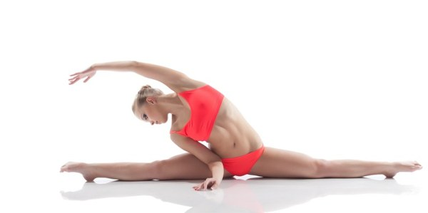

|
Головна
|
Про нас
|
Види занять
Пол Денс (Pole Dance)
x
Pole Dance
Pole Dance - Це напрямок танцю на пілоні, в якому особлива увага приділяється освоєнню
техніки виконання елементів на пілоні:
- крутки на статичному пілоні
- силові трюки на пілоні
- елементи на гнучкість і баланс
- специфіка роботи на динамічному пілоні
Форма одягу:
стретчингові шорти, топ, носки або балетки.
Вік, вага і рівень фізичної підготовки НЕ МАЮТЬ ЗНАЧЕННЯ!
|
Повітряне полотно (Aerial Silk)
x
Aerial Silk
Цей напрямок, який прийшов в танцювальний спорт з цирку, поєднується в собі силову акробатику, витонченість,
граційність, пластику, розтяжку, хореографію і танцювальні елементи. Заняття на повітряних полотнах розвивають
м'язову витривалість, силу, гнучкість і розтяжку.
Заняття триває 1 годину.
Форма одягу:
одяг повинен облягати і закривати максимум тіла, це дозволить уникнути натертостей. Лосіни, кофта з рукавами, на ноги: носки або чешки.
Вік, вага і рівень фізичної підготовки НЕ МАЮТЬ ЗНАЧЕННЯ!
|
Повітряне кільце (Aerial Hoop)
x
Aerial Hoop
На тренуваннях ви зможете виконувати елементи на силу і гнучкість, навчитеся витонченим переходам, круткам і обривам.
Заняття на повітряному кільці дозволять вам не тільки бути в прекрасній фізичній формі, але і стати більш
пластичним і впевненим у собі.
Заняття триває 1 годину.
Форма одягу:
одяг повинен облягати і закривати максимум тіла, це дозволить уникнути натертостей. Лосіни, довгий топ. На ноги: носки або балетки.
Вік, вага і рівень фізичної підготовки НЕ МАЮТЬ ЗНАЧЕННЯ!
|
Розтяжка (Stretching)
x
Stretching

Стретчинг - це вправи на розтяжку і гнучкість.
Крім можливості сісти на шпагат, заняття стретчингом прекрасно тренують м'язи шиї, спини, рук і всієї верхньої
частини тіла. Регулярні вправи на розтяжку не дадуть вашим м'язам і суглобам втратити рухливість і тим самим допоможуть запобігти старіння.
Стретчинг обов'язково входить до складу комплексної підготовки професійних спортсменів і застосовується як окремий напрямок оздоровчої та
лікувальної гімнастики. Заняття триває 1 годину.
Форма одягу: футболка, лосіни. На ноги: носки.
Вік, вага і рівень фізичної підготовки НЕ МАЮТЬ ЗНАЧЕННЯ!
|
Pole Dance ДІТИ (Kids Pole Dance)
x
Kids Pole Dance
У всьому світі діти, які танцюють Пол Денс викликають захоплення і повагу своєю грацією, пластикою і спортивною статурою.
Їх гнучкість дозволяє виконувати набагато складніші і цікавіші трюки, ніж дорослим.
PoleDance- це спортивний танцювальний напрямок, що увібрало в себе кращі елементи фітнесу, гімнастики і акробатики.
Міжнародна федерація Пол Спорту оновила норми танцювальних рухів, тепер Пол Денс планують зробити одним з олімпійських видів змагань.
Дітей вчимо починаючи з трирічного віку. А тих хто досягає певних успіхів, по бажанню дитини і батьків відправляємо на змагання.
Пілон для дітей - аналог турніка або гойдалки.
На відміну від звичайної гімнастики цей вид спорту більш щадний і менш травматичний.
Заняття триває 1 годину.
Форма одягу: футболка, шорти. На ноги: носки.
Вік:3-7років.
|
Тверк (Twerk)
x
Twerk
Це вид танцю, в якому активно працюють стегна і сідниці, а верхня частина тіла практично нерухома.
Танцюють цей танець зазвичай жінки. Під час танцю спалюється велика кількість калорій і прокачуються сідничні м'язи. Заняття триває 1 годину.
Форма одягу: Ідеальними будуть майка або топ, короткі шортики або лосіни. Взуття:
кросівки або кеди з гумовою підошвою. Також для занять тверком обов'язково потрібно купити
наколінники.
Вага і рівень фізичної підготовки НЕ МАЮТЬ ЗНАЧЕННЯ!
|
Екзотик Пол Денс (Exotic Pole Dance)
x
Exotic Pole Dance
Неймовірно жіночний танець на пілоні, завдяки якому ви відчуєте себе красивою, розкутою, спокусливою.
Партерні зв'язки поєднуються з крутками, різними переходами і елементами Pole Dance. Величезний простір для вашої
творчості. Це вибір стильної, сучасної і впевненої в собі дівчини. Заняття триває 1 годину.
Форма одягу:облягаючі штани або шорти, футболка, наколінники. На ноги туфлі-стрипи (якщо нема-то можна носочки).
Вага і рівень фізичної підготовки НЕ МАЮТЬ ЗНАЧЕННЯ!
|
Степ Аеробіка (Step Aerobics)
x
Step Aerobics
Якщо ви стверджуєте, що степ-аеробіка - це нудно і банально, значить, ви жодного разу не пробували відвідати
тренування. А тим часом заняття цим видом фітнесу допоможуть вам отримати гармонійно складене тіло, відмінну
поставу і правильні, красиві рухи. Ритмічна музика, грамотний тренер, платформа і гарний настрій - ось і все,
що потрібно для ефективного тренування! Цифри на вазі почнуть танути миттєво...Просто почни!
Заняття триває 1 годину.
Форма одягу: штани або шорти, футболка. На ноги красовки.
Вага і рівень фізичної підготовки НЕ МАЮТЬ ЗНАЧЕННЯ!
|
|
Розклад
|
Ціни
|
Контакти
|
Оренда
|